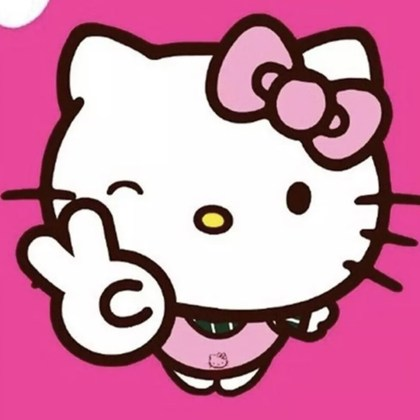
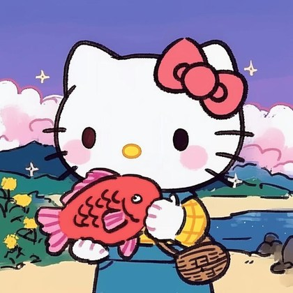
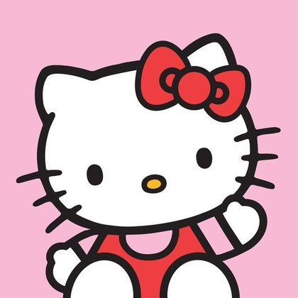

|
Hello Kitty 粉 色 小 世 界 · 甜 心 收 藏 馆 |
首 页 ｜ 角色介绍 ｜ 留言板 |
| 她住在伦敦郊外，身高五个苹果 |
| 当前位置：首页 > 角色介绍 | 更新时间：2026-10-28 |
| ◆ 基 本 档 案 |
| 本 名 | Kitty White（凯蒂·怀特） | 生 日 | 1974 年 11 月 1 日 |
| 星 座 | 天蝎座 | 血 型 | A 型 |
| 出生地 | 英国伦敦郊外 | 身 高 | 五个苹果高 |
| 体 重 | 三个苹果重 | 性 格 | 开朗、温柔、有点小倔强 |
| 拿 手 的 | 烤饼干、做布丁、弹钢琴 | 喜欢的食物 | 妈妈做的苹果派 |
| 标 志 | 左耳上的一只红色蝴蝶结，白色小脸，六根胡须，没有嘴巴 | ||
| ◆ 关 于 她，你 可 能 不 知 道 的 三 件 事 |
|
|
|
| ◆ 家 族 与 朋 友 |
| 称 呼 | 名 字 | 简 介 |
| 爸爸 | George White | 温和的上班族，周末喜欢带全家出门 |
| 妈妈 | Mary White | 会做苹果派和布丁，Kitty 的手艺都学自她 |
| 双胞胎妹妹 | Mimmy White | 性格更安静，喜欢画画，蝴蝶结戴在右边 |
| 男朋友 | Dear Daniel | 叫丹尼尔的男孩，爱拍照，也爱旅行 |
| 宠物猫 | Charmmy Kitty | 真正的小猫，脖子上挂着爸爸送的钥匙 |
| 小伙伴 | Sugar / Tippy Bear | 一只仓鼠和一只小熊，常一起喝下午茶 |
| ◆ 成 长 年 表 |
| 1974 | 11 月 1 日，她第一次出现在一只小钱包上，售价 240 日元 |
| 1976 | 走进美国市场，一年之内在那边卖出两百万件周边 |
| 1983 | 出任美国联合国儿童基金会儿童大使 |
| 1999 | 宠物猫 Charmmy Kitty 登场 |
| 2008 | 被任命为日本观光亲善大使，开始环球旅行 |
| 2014 | 四十岁生日，全球一百多个国家同时办展 |
| 2024 | 五十岁，她还在戴那只红蝴蝶结，一点没变 |
| ◆ 周 边 图 集 | 共 6 张 点击图片可放大 |
|
 |
 |
|
|
 |
|
| 首页 ｜ 角色介绍 ｜ 留言板 |
|
© 2019 - 2026 Hello Kitty 粉色小世界 保留所有权利 联系邮箱：hello@kittyworld.com ｜ 投稿合作：club@kittyworld.com |